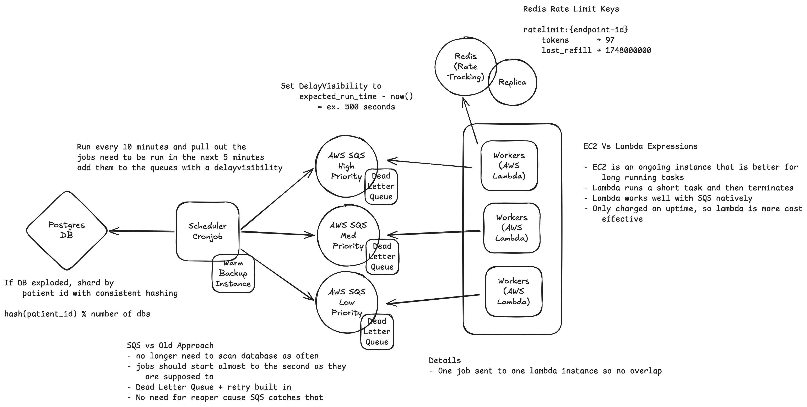

Scaling to 10M Patients
Current State (5K)
- Postgres + Redis sorted set + stateless Python workers
- Scheduler polls DB every N seconds, pushes to Redis queue
- Workers block on
BZPOPMIN, token bucket rate limiting
per endpoint
Bottlenecks at Scale
- Scheduler scanning 10M rows every N seconds → full table scan,
slow
- Single Redis instance → SPOF
- Worker count is manual → can’t track queue depth automatically
- Single Postgres → write throughput ceiling under sustained load
High-Scale Architecture

Architecture
Scheduler → EventBridge
Cronjob
- Runs every 10 min, pulls jobs due in next window
- Sets SQS
DelayVisibility = expected_run_time - now() so
messages arrive exactly when due
- Eliminates polling entirely
- Warm standby with DB advisory lock to prevent double-scheduling
Queue → 3 SQS Priority Queues
- Urgent / Normal / Low — each with its own DLQ
- No reaper needed — SQS visibility timeout handles worker crashes
automatically
- DLQ captures permanently failed jobs for inspection
Workers → Lambda
- One invocation per job, no overlap possible
- Provisioned Concurrency on urgent queue — eliminates cold
starts
- Low priority queue uses on-demand — cold starts acceptable
- Auto-scales with queue depth via reserved concurrency
Rate Limiting → ElastiCache
Redis
- Same Lua token bucket, shared across all Lambda invocations
- Redis replica for HA — auto-elected on failure
Database → Sharded Postgres
- Shard by
hash(patient_id) % N — all data for a patient
on one shard, no cross-shard writes
- Start with time-based partitioning on
refresh_jobs
first (zero app changes)
studies / ehr_endpoints stay unsharded
(read-only reference data)
Tradeoffs
- Lambda cold starts ~100ms — fine for async jobs, not for
user-triggered urgent refreshes (mitigated by Provisioned
Concurrency)
- SQS
DelayVisibility max is 15 min — EventBridge
Scheduler needed for weekly/bi-weekly studies
- Hash sharding makes rebalancing painful — pick shard count with
headroom upfront
- SQS loses Redis co-location — rate limiter must be a separate
ElastiCache call per job